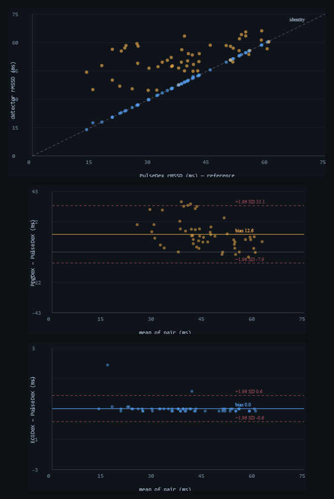

PulseDex · ECGDex · PpgDex nodes, Tepna physiological-signal suite
Background. The suite derives the same time-domain HRV metric, rMSSD, from three different inputs — recorded RR intervals (PulseDex), the raw ECG (ECGDex, Pan–Tompkins), and the optical pulse (PpgDex). Whether those numbers are interchangeable determines whether they can be pooled, substituted, or fused. Methods. On the FULL-lane waveform harness, one ~9-minute apnea-cluster window per synthetic patient (54 windows) was scored for rMSSD by all three production detectors on the same co-generated beats: PulseDex reads the ground-truth RR (the reference), ECGDex re-derives it from the raw int16 ECG at 130 Hz, and PpgDex from the 176 Hz optical pulse. We report pairwise Bland–Altman agreement. Results. ECGDex and PulseDex were statistically interchangeable: bias +0.02 ms (0.04%), 95% limits of agreement −0.6…+0.6 ms, Pearson r 0.9997 — two detectors sharing no code, signal, or sampling rate recover the identical tachogram, the 130 Hz + QRS-detection floor adding only ≈0.3 ms SD. PpgDex diverged sharply: bias +12.6 ms (+32%), limits −7.9…+33.1 ms (≈30× wider), r 0.57. The optical-only dispersion — the quadrature excess over the electrical floor — was ≈10.4 ms, i.e. essentially all of the PPG disagreement is pulse-arrival-time jitter, not sampling or detection. Conclusion. RR- and ECG-derived rMSSD are interchangeable and may be pooled or cross-validated; optical pulse-rate variability is a different quantity that is biased high and weakly correlated, and must be reported as its own metric and weighted (not substituted) in fusion. Synthetic ground truth: this certifies cross-detector agreement and quantifies each modality's intrinsic dispersion — it is not a real-patient equivalence study.
Keywords: heart-rate variability · rMSSD · pulse-rate variability · photoplethysmography · QRS detection · Bland–Altman · pulse-arrival-time · method comparison · sensor fusion
The app calculates the same heart-rhythm score (“rMSSD”) from three different sources: a recorded list of heartbeat intervals, a raw ECG trace, and the optical (blood-flow) pulse. The question: are those three numbers the same number, so they can be mixed and matched?
Answer: the ECG and the interval-list agree almost perfectly — different code, different signal, yet essentially identical results, so they're interchangeable. The optical pulse is a different animal: its score runs about a third too high and only loosely tracks the others, because the time it takes blood to reach your wrist wobbles beat to beat. The takeaway for the software: treat the optical heart-rhythm number as its own metric — never quietly swap it in for the ECG one, and give it less weight when combining sensors. (Simulation with shared, known beats — it proves which detectors agree and why, not exact human magnitudes.)
rMSSD — the root mean square of successive RR differences — is the suite's workhorse short-term HRV metric, and three nodes compute it from three different front ends: PulseDex from a recorded RR series, ECGDex from the raw electrocardiogram, and PpgDex from the wrist/finger optical pulse. Downstream code routinely treats these as one number: pooling them across a cohort, substituting whichever is available, or fusing them into a single autonomic estimate. That is only valid if the three agree. Two of them recover beats electrically or from the interval stream; the third recovers them from a peripheral pressure wave whose timing, relative to the heartbeat, varies beat to beat (pulse-arrival-time, a function of blood pressure and vascular tone). rMSSD is by construction maximally sensitive to exactly that beat-to-beat timing jitter, so the optical estimate may not be interchangeable with the electrical ones even when both detectors are working perfectly.
We test interchangeability directly. Because all three detectors here score the same underlying beats, any disagreement is attributable to the front end — sampling rate, detector behaviour, or (for the optical arm) pulse-arrival-time jitter — rather than to different recordings. Bland–Altman quantifies the bias and the limits of agreement for each pair, and contrasting the optical pair against the electrical pair isolates the pulse-arrival-time component.
The FULL lane renders, per patient, one ~9-minute window centred on an apnea cluster, in each modality's native raw form, from one shared master event timeline — so the RR beat train is identical across modalities. PulseDex is given the window's ground-truth RR (artifact-cleaned) and serves as the reference. ECGDex re-derives beats from a raw int16 µV ECG at 130 Hz with its production Pan–Tompkins pipeline; the renderer places each R-peak at its true beat time, so detected R-to-R intervals equal the true RR up to 130 Hz quantization. PpgDex re-derives beats from the 176 Hz optical pulse with its production foot/peak detector. No detector parameters were altered; timestamps follow the suite Clock Contract. Each detector is loaded in its own realm (PulseDex in the shipped single-node harness; ECGDex and PpgDex in a FULL-lane worker) so the plain-global DSP files never share scope.
For each detector pair we compute Bland–Altman agreement on the per-window rMSSD: the mean difference (bias), its standard deviation, the 95% limits of agreement (bias ± 1.96 SD), the percentage bias relative to the reference mean, and the Pearson correlation. The optical-only dispersion is the quadrature excess of the PPG−Pulse standard deviation over the ECG−Pulse standard deviation, √(SD²₍PPG−Pulse₎ − SD²₍ECG−Pulse₎), which removes the sampling-plus-detection floor common to both and leaves the pulse-arrival-time component. The run reported here covers 60 sampled patients (54 valid windows with all three rMSSD values).
| Pair | n | Bias (ms) | Bias (%) | SD (ms) | 95% LoA (ms) | Pearson r |
|---|---|---|---|---|---|---|
| ECGDex − PulseDex | 54 | +0.02 | +0.04% | 0.30 | −0.58 … +0.61 | 0.9997 |
| PpgDex − PulseDex | 54 | +12.63 | +32.4% | 10.45 | −7.85 … +33.12 | 0.567 |
| PpgDex − ECGDex | 54 | +12.62 | +32.4% | 10.43 | −7.83 … +33.05 | 0.563 |
ECGDex and PulseDex agreed almost exactly: a bias of +0.02 ms (0.04% of the reference mean), 95% limits of agreement of just −0.6 to +0.6 ms, and a Pearson correlation of 0.9997. These are two detectors that share no source code, no input signal (raw ECG vs an RR list), and no sampling model, yet they recover the identical tachogram; the 130 Hz sampling and the Pan–Tompkins detection together inject only ≈0.3 ms of beat-to-beat dispersion. RR- and ECG-derived rMSSD are, for practical purposes, the same number — they can be pooled across the two nodes and used to cross-validate one another.

qrs-equiv-analysis.html). Top: each detector's rMSSD vs the PulseDex reference — ECGDex (blue) lies on the identity line, PpgDex (amber) sits systematically above it. Middle: Bland–Altman PpgDex − PulseDex — bias +12.6 ms with wide limits of agreement (−7.9…+33.1 ms), the signature of pulse-arrival-time jitter. Bottom: Bland–Altman ECGDex − PulseDex on the same axis scale family — a tight cluster on zero (±0.6 ms), the sampling-plus-detection floor. The ≈30× difference in limit width between the two panels is the optical-only dispersion. Dark theme is the tool's native rendering.PpgDex diverged from both electrical detectors by the same margin (it agrees with whichever electrical arm, since those agree with each other): a bias of +12.6 ms (+32%), limits of agreement of −7.9 to +33.1 ms — roughly thirty times wider than the ECG–RR limits — and a correlation of only 0.57. The optical-only dispersion, after removing the sampling-plus-detection floor in quadrature, was ≈10.4 ms: essentially the entire PPG disagreement is pulse-arrival-time jitter rather than sampling rate or detector dropout. Beat-to-beat variation in how long the pulse takes to reach the periphery adds real variability to the optical inter-beat series that is absent from the electrical one, inflating rMSSD and decorrelating it from the true tachogram. This is consistent with the broader literature distinction between pulse-rate variability and heart-rate variability; here it is reproduced end-to-end by the production detectors on identical beats.
The practical rule is asymmetric. RR- and ECG-derived rMSSD are interchangeable: a fusion layer can treat them as one measurement, pool them, or use either to validate the other (the 0.9997 agreement is, in effect, a cross-node regression test for the HRV pipeline). Optical rMSSD is not interchangeable with them — it is biased high by about a third and only moderately correlated — so it should be reported as pulse-rate variability in its own right, never silently substituted for HRV, and in fusion it should be down-weighted relative to an available electrical arm rather than averaged in as an equal. The earlier finding that the optical arm also mildly over-detects and loses beats under apnea (companion preprint, qrs-yield.html) compounds this: PpgDex rMSSD carries both a yield error and a pulse-arrival-time inflation, and only the electrical arm is a clean HRV reference.
qrs-equiv-analysis.html → set patients → "Run cohort". The agreement scatter, both Bland–Altman panels, the headline cards and Table 1 populate live. Export rmssd-equivalence-results.csv (per-window), rmssd-equivalence-stats.json (pairwise), rmssd-equivalence-figures.png.pulsedex-dsp.js (parseRRInput → artifactClean → rmssd, in cohort-harness.html?node=pulsedex), ecgdex-dsp.js and ppgdex-dsp.js (analyze().rmssd, in the FULL-lane worker qrs-equiv-worker.js).SYNTH.pickWindow) of one cardiac night; ECG via cohort-full.js renderECGInt16 (R at true beat times), PPG via synth-gen.js renderPPG, the reference RR from SYNTH.buildRR in-window.Like its companion, this is a FULL-lane waveform pilot — raw ECG + optical rendered and scored per patient — so runtime, not statistics, is the constraint and 100k-scale is impractical. The agreement estimates (bias, limits of agreement, Pearson r) are per-window comparisons; their precision improves as ~1/√N_windows. Because the RR–ECG agreement is near-perfect and the optical divergence is large, both conclusions are unmistakable at modest N.
| Tier | Patients | What it buys |
|---|---|---|
| Minimum (acceptable) | ~30 | Both verdicts clear: RR–ECG limits of agreement <±1 ms, optical bias ≈+12 ms with ≈30× wider limits. Pearson r stable to ≈±0.03. |
| Recommended | ~60–100 | Bland–Altman limits and r to ≈±0.01; clean three-panel agreement figure. This run used 60 (54 valid shared-beat windows). |
| This run | 60 | 54 windows with all three rMSSD values; RR–ECG r = 0.9997, optical r = 0.57. |
| Diminishing returns | > ~200 | The two limits-of-agreement bands are already separated by ~30×; more single windows only add FULL-lane hours. Greater value comes from varying autonomic state / window length than from more patients. |
Practical reading: ~30 patients to settle interchangeability, ~60–100 for tight published limits of agreement; beyond ~200 the FULL-lane cost dominates — vary autonomic state and window length rather than adding patients.
CLAUDE.md (Clock Contract, evidence-grade system), COHORT-VALIDATION-README.md, PAPERS-AND-FIXES-BRIEF.md, Tepna suite.qrs-yield.html (modality-asymmetric beat-yield), cgm-hrv-coupling.html (cross-node coherence), Tepna working preprint series.